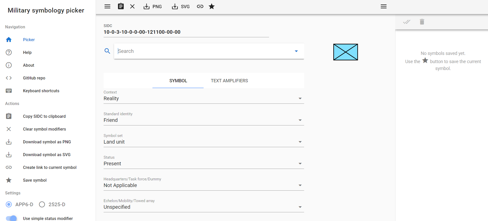
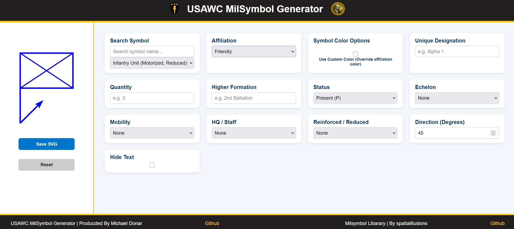

Javascript web application using Github libraries to allow for the creation of Nato mapping symbols using NATO APP-6.

Dashboard before Redesign
As the second and primary project of my internship at the USAWC, I developed a web application from scratch to replace existing similar projects. This application was built to offer better customization and to provide the USAWC staff with full control over the codebase.
Initial research began by examining the milsymbol GitHub library by spatialillusions to understand how their code generates symbols. Additionally, I researched the NATO APP-6 functions and its formatting standards, as this was a new topic to me.
A main feature I focused on was ensuring both quick symbol creation and customization, allowing for text to be added at any moment and colors to be selected as needed.

The project works by taking Nato symbols code used for icon creation in the github libary converting them into strings then modifes thier string with a new charter in the corrcet spot correspriding to Nato APP-6.
For example, if a user selects the Infantry Unit (Motorized,
Reduced) symbol, the system generates the code SFGPUCI---R----.
If the user changes the status to "Damaged" instead of "Present
and Functional," the UI updates the character string to
SFGDUCI---R----. This modifies the 4th character to
a "D" to represent "Damaged," as defined by the NATO
APP-6 standards.
This project marked my first experience with NATO APP-6 and provided the opportunity to work on my largest project to date. Challenges arose regarding my understanding of NATO symbol construction, as well as the tedious process of inputting all symbols into a database. However, by utilizing available resources, I was able to find a few lists of symbol codes to expedite the process.
Within six weeks of mostly unsupervised work, I exceeded the project requirements; rather than simply demonstrating the logic behind a symbol generator, I developed a fully functional prototype. Additionally, I provided a technical code analysis and a comprehensive walkthrough for senior USAWC staff.